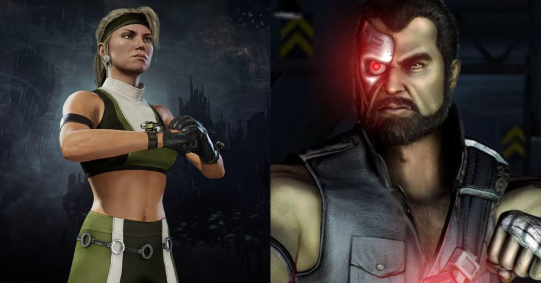

| Episodio 1 - 2 | Jax, Sonya & Kano - Part 1 - Legendado |  |
| Jax, Sonya & Kano - Part 2 - Legendado | ||
| Episodio 3 | Johnny Cage - Legendado | |
| Episodio 4 - 5 | Kitana & Mileena - Part 1 - Legendado | |
| Kitana & Mileena - Part 2 - Legendado | ||
| Episodio 6 | Raiden - Legendado | |
| Episodio 7 - 8 | Scorpion & Sub-zero - Part 1 - Legendado | |
| Scorpion & Sub-zero - Part 2 - Legendado | ||
| Episodio 9 | Cyrax & Sektor - Legendado |
A Websérie é adaptada a partir do ponto de vista do diretor Kevin Tancharoen.